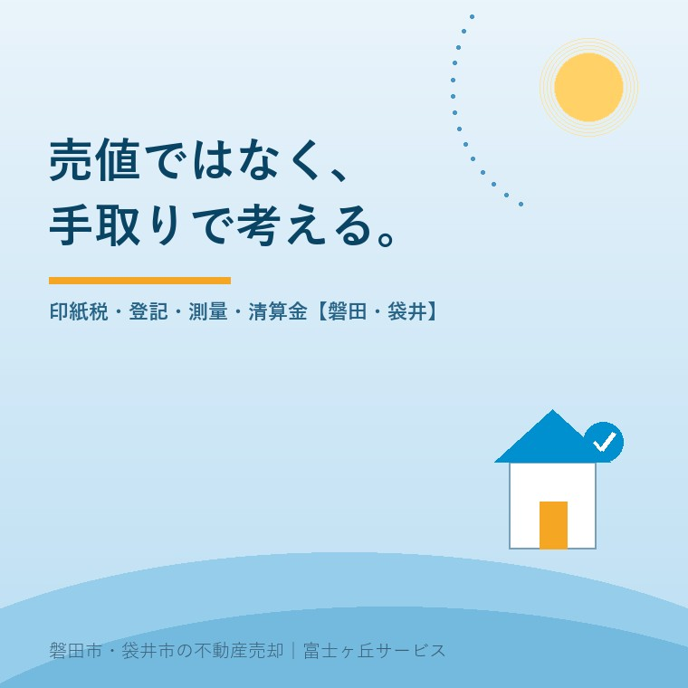

2026年8月6日｜カテゴリ：コスト・税・制度

この記事の要点
Q. 実家が1,000万円で売れたら、手元には1,000万円入ってくるのですか？
A. 入りません。仲介手数料・印紙税・抵当権抹消・測量・残置物処分などの実費が差し引かれ、さらに利益が出れば譲渡所得税がかかります。一方で、固定資産税の清算金のように売主側にプラスで戻ってくるお金もあります。大切なのは、売り出す前に「売値」ではなく「手取り」で見積もっておくこと。金額が分かっていれば、その後の値引き交渉にも落ち着いて向き合えます。磐田市・袋井市では、介護施設の運営から不動産事業を始めた富士ヶ丘サービスのような地域密着の会社に、手取りの試算から相談するという選択肢があります。
「1,200万円で売れました」とご報告したとき、「では1,200万円が振り込まれるんですね」とおっしゃる方がいます。実際は違います。そして、そのズレを引渡しの直前に知ると、必ず落胆されます。
実家には4つの値段があるという記事で「査定額と成約価格は違う」という話を書きましたが、今日はもう一歩先です。成約価格と手取りも、また違う。売り出す前に一度、この計算をしておきましょう。
複雑に見えますが、式そのものは単純です。
| 手取り | ＝ 売買代金 － 諸費用（実費） － 譲渡所得税など ＋ 固定資産税等の清算金 |
|---|
やっかいなのは、この「諸費用」に入るものが、家ごとにまったく違うことです。ローンが残っていれば抵当権抹消が要り、境界が不明なら測量が要り、家財が残っていれば処分費が要る。だから当社では、相談を受けた段階でその家に必要な項目だけを並べた表をお作りしています。以下、その中身を順に見ていきます。
| 項目 | 金額の目安 | 払うタイミング |
|---|---|---|
| 印紙税（売買契約書） | 下の表のとおり。1,000万円なら5,000円 | 契約時 |
| 仲介手数料 | 売買代金×3％＋6万円＋消費税（400万円超の場合の上限）。800万円以下の物件は税込33万円までの特例あり | 契約時と引渡時に半分ずつが一般的 |
| 抵当権抹消の登録免許税 | 不動産1個につき1,000円（土地1筆＋建物1棟なら2,000円） | 引渡時 |
| 住所等変更登記の登録免許税 | 不動産1個につき1,000円 | 引渡時（または事前） |
| 司法書士報酬 | 抹消・住所変更で合わせて2〜4万円程度（事務所により異なる） | 引渡時 |
| ローンの繰上返済手数料 | 0〜数万円（金融機関により異なる） | 引渡時 |
印紙税は軽減措置の期間中です。不動産の譲渡に関する契約書は、平成26年4月1日から令和9年（2027年）3月31日までに作成されるものについて、次の税額に軽減されています（記載金額10万円超が対象）。
| 契約金額 | 軽減後の印紙税 |
|---|---|
| 100万円超 500万円以下 | 1,000円 |
| 500万円超 1,000万円以下 | 5,000円 |
| 1,000万円超 5,000万円以下 | 10,000円 |
| 5,000万円超 1億円以下 | 30,000円 |
なお、印紙税が課されるのは「文書」であり、電磁的記録（電子契約）は印紙税法上の文書に含まれません（国税庁 質疑応答事例）。電子契約に対応している会社であれば、この数千円〜数万円は不要になります。
仲介手数料の「3％＋6万円」は上限であって定価ではない、という話と、2024年7月1日から始まった800万円以下の物件の特例（依頼者から受け取れる報酬は税込33万円まで）については、仲介手数料のしくみの記事に詳しく書きました。空き家の売却では効いてくる改正です。
意外と多いのが、登記簿の住所が昔のままという実家です。売却で所有権を移すには、名義人の住所・氏名を現在のものに直す登記（住所等変更登記）が前提になります。これまでも実務上は必要でしたが、令和8年（2026年）4月1日から、住所等変更登記そのものが義務化されました。
2024年4月1日から始まった相続登記の義務化（3年以内・10万円以下の過料）と合わせて、登記まわりの宿題は2年で片づける時代になりました。売却の話が出たら、まず登記事項証明書を取り寄せて、名義と住所を確認するところからです。
| 項目 | 金額の目安 | 必要になるケース |
|---|---|---|
| 確定測量・境界確定 | おおむね35〜80万円。隣接地に道路・水路など官地が絡むと期間も費用も増える | 境界標が無い／実測売買を求められた／分筆する |
| 建物解体 | 木造で坪3〜5万円程度が目安。付帯工事で増減 | 更地渡しを条件にした場合。解体費用の記事参照 |
| 残置物の処分 | 数万円〜数十万円。仏壇・大型家具・農機具があると増える | 家財が残っている（実家じまいではほぼ全件） |
| ハウスクリーニング | 数万円〜 | 内覧前の印象改善に。費用対効果は高い |
| 相続登記 | 登録免許税＝固定資産税評価額×0.4％＋司法書士報酬 | 名義が親のまま。売る前に必ず必要 |
この中で読み違いが起きやすいのが測量です。「境界杭が入っているから大丈夫」と思っていても、隣地の所有者全員から境界確認の押印をもらう「確定測量」となると、話は別。相続で持ち主が代わっていたり、遠方に住んでいたりすると、それだけで数か月かかります。
そして解体は、必ず売却方針を決めてから。更地にした瞬間に再建築ができなくなる土地が、この地域には実際にあります（市街化調整区域の記事）。
意外と知られていないのが、これです。固定資産税・都市計画税は1月1日時点の所有者に1年分が課税されます。つまり年の途中で売っても、納税義務者は売主のまま。そこで実務では、引渡日を境に日割りして、買主から売主へ精算金として受け取るのが慣行になっています。
| 項目 | 内容 |
|---|---|
| 法律上の義務か | いいえ。あくまで当事者間の合意による慣行。契約書に定めて初めて発生する |
| 起算日 | 1月1日起算と4月1日起算があり、地域や会社の慣習で分かれる。どちらかで金額が変わるので契約前に確認を |
| 計算例 | 年税額10万円・1月1日起算・10月1日引渡しなら、10月1日〜12月31日の92日分＝約2.5万円が売主へ |
| 注意点 | 受け取った清算金は譲渡代金の一部として譲渡所得に含めて計算する |
金額としては大きくありませんが、「どちらの起算日か」は契約条件の一つです。買主・売主のどちらに有利かが変わるので、当社では必ず事前にご説明しています。
利益（譲渡所得）が出た場合にかかります。式は「売った金額 －（取得費＋譲渡費用）－ 特別控除」。税率は所有期間で二段階です（所有期間は売った年の1月1日時点で判定）。
| 区分 | 所有期間 | 税率（所得税＋復興特別所得税＋住民税） |
|---|---|---|
| 長期譲渡所得 | 5年超 | 20.315％（15％＋0.315％＋5％） |
| 短期譲渡所得 | 5年以下 | 39.63％（30％＋0.63％＋9％） |
相続した実家は、被相続人が取得した日を引き継ぐので、ほとんどのケースで長期になります。問題は取得費のほうで、親が買ったときの契約書が見つからないと概算取得費＝売却代金の5％で計算せざるを得ません。1,000万円で売れば取得費は50万円扱い。ここで税額が大きく変わります（取得費と税金の記事で詳しく書きました。まず古い契約書を探してください）。
そして、実家じまいで最も効くのが「被相続人の居住用財産（空き家）を売ったときの3,000万円特別控除」です。主な要件を整理します。
ほかに、相続税を納めた方が使える「取得費加算の特例」（相続税の申告期限の翌日以後3年以内の譲渡）もあります。どれが使えるかで手取りが数百万円動きますので、必ず税理士に確認してください。
よくあるケースで並べてみます。相続した築50年の木造、土地と建物1個ずつ、ローン完済済み、境界は未確定、家財あり、更地にして1,000万円で売却という設定です。
| 項目 | 金額 |
|---|---|
| 売買代金 | ＋1,000万円 |
| 仲介手数料（3％＋6万円＋消費税） | −39.6万円 |
| 印紙税（500万円超1,000万円以下・軽減後） | −0.5万円 |
| 相続登記・住所変更登記など（登録免許税＋司法書士報酬） | −10万円前後 |
| 確定測量 | −50万円 |
| 解体（木造30坪・付帯込み） | −120万円 |
| 残置物処分 | −20万円 |
| 固定資産税等の清算金（10月引渡し・1月1日起算） | ＋2.5万円 |
| 税引前の手取り | 約762万円 |
| 譲渡所得税（取得費不明→概算5％。仲介手数料・印紙税・解体費・測量費を譲渡費用として控除。空き家特例が使えない場合） | −約150万円 |
| 最終的な手取り | 約612万円（空き家特例が使えれば約762万円） |
1,000万円が612万円。この差を「聞いていなかった」と感じるか、「想定どおり」と受け止められるかで、売却の体験はまったく変わります。そして表を見れば分かるとおり、効くのは仲介手数料より、解体・測量・税金です。手数料の数万円を値切るより、解体せずに現況で売れないか、空き家特例が使えないかを検討するほうが、桁違いに手取りが増えます。
いずれも、売り出す直前に慌ててやると、時間切れで足元を見られます。秋商戦に向けた8月の使い方で書いたとおり、動くなら今です。
手取りの数字を持っている売主は、強いです。「あと100万円下げてほしい」と言われたとき、その100万円が自分の生活にどう響くかを即座に判断できるからです。逆に数字を持っていないと、なんとなく不安なまま受けてしまう。値引き交渉の記事で書いた「引き算の準備」とは、まさにこのことです。
富士ヶ丘サービスは、磐田市・袋井市に特化した地域密着の会社として、査定額をお出しするときに必ず手取りの試算を添えてご説明しています。介護費用の支払いに充てるご家族が多いからこそ、「いつ、いくら入るか」は曖昧にできません。実家じまい相談室へ、固定資産税の通知書だけお持ちください。
ふじがおか実家カルテ｜査定額ではなく「手取り」でお渡しします
売る前に、残る金額を確定させる。
登記情報・公図・固定資産税通知書から、名義と抵当権の状態、測量の要否、使える税の特例までを宅建士が調べ、想定手取りを1冊にまとめてお渡しします。
本記事は2026年8月6日時点の公開情報に基づく一般的な解説です。税額の試算はモデルケースであり、実際の税額・費用は物件の状況、取得費の資料、適用できる特例、依頼先により異なります。譲渡所得税の申告および特例の適用可否については税理士・税務署に、登記については司法書士にご確認ください。個別のご相談は当社までどうぞ。

この記事を書いた人：大石浩之（宅地建物取引士）
磐田市・袋井市で「介護×相続×空き家」に特化した不動産売却支援を行う富士ヶ丘サービスの代表取締役・宅地建物取引士。介護施設の運営から不動産事業を始めた経験をもとに、売主とご家族が困らない売却を一件ずつお手伝いしています。プロフィール
磐田市・袋井市の実家じまい・相続空き家相談
固定資産税通知書だけでも相談できます
住所があいまいでも、通知書や写真から名義・道路・農地・残置物の確認順を整理します。カルテ申込またはLINEで状況を送ってください。
富士ヶ丘サービス株式会社／静岡県磐田市見付5789番地1／TEL:0538-31-3308／静岡県知事 (2) 第14083号／代表取締役・宅地建物取引士 大石 浩之